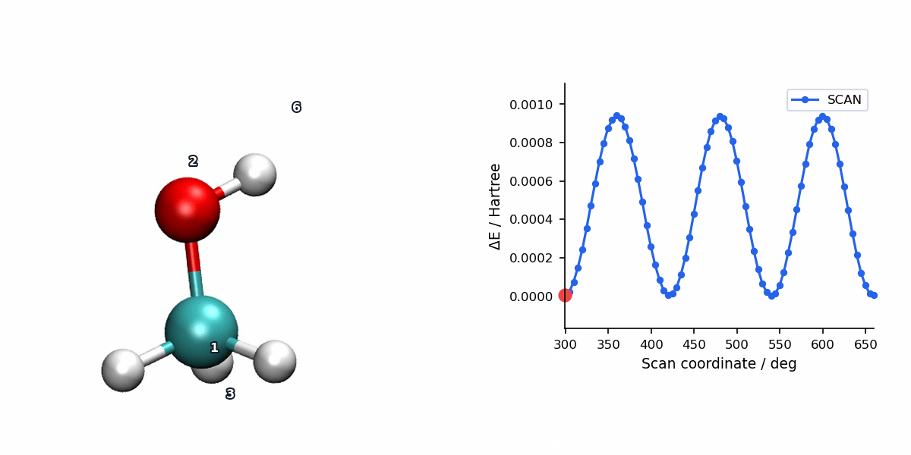

PES Scan with RFO Optimization
Overview
RFO (Rational Function Optimization) is available as a relaxed PES scan optimizer through #scan(method=rfo). At each scan point, MAPLE constrains the requested internal coordinates and reuses the same RFO minimizer used by #opt(method=rfo) to relax the remaining degrees of freedom.
RFO is more expensive than L-BFGS because it uses Hessian information and a trust-region step, but it can be more stable when the scan passes through regions with strong curvature changes or difficult convergence.
Parameters
Per-point RFO settings reuse the same controls as #opt(method=rfo). The shared level preset on #scan supplies the scan-point convergence thresholds; the scan driver sets per-point optimizer verbosity to quiet by default.
| Parameter | Type | Default | Description |
|---|---|---|---|
max_iter |
int | 256 |
Maximum number of RFO iterations per scan point. |
trust_radius_init |
float | 0.2 |
Initial trust radius in Angstrom. |
trust_radius_min |
float | 1e-3 |
Minimum trust radius. |
trust_radius_max |
float | 1.0 |
Maximum trust radius. |
eta_shrink |
float | 0.75 |
Trust radius shrink factor when step quality is poor. |
eta_expand |
float | 1.75 |
Trust radius expansion factor when step quality is good. |
evals_eps |
float | 1e-10 |
Eigenvalue epsilon for numerical stability. |
mu_margin |
float | 1e-8 |
Margin for the level-shift parameter mu. |
max_bisect_it |
int | 60 |
Maximum bisection iterations for level-shift optimization. |
verbose |
int | 0 in scans |
Per-point optimizer verbosity. Scan keeps this low so the scan log stays readable. |
Input Example
Checked-in MAPLE example: example/scan/rfo/methanol_oh_torsion.inp. This is the relaxed methanol O-H torsion scan shown in the visualization below:
#model=aimnet2nse
#scan(method=rfo,mode=relaxed)
#device=gpu0
C -0.46276972 1.15067867 0.42624477
O -0.32124714 -0.24861552 0.26422771
H -1.51133868 1.39211728 0.61684893
H -0.13712321 1.64920740 -0.48974849
H 0.15713375 1.48625319 1.26124710
H -0.61759765 -0.66356677 1.09214997
S 3 1 2 6 5.0 72The final S line is a dihedral scan: four atom indices followed by a 5.0 degree step and 72 increments, producing 73 scan points including the initial geometry.
Scan Visualization
The animation below pairs the generated scan geometries with the energy profile for a relaxed methanol torsion scan using RFO.

When to Use RFO Scans
- L-BFGS struggles at selected scan points: RFO's Hessian-based trust-region step accepts/rejects per step, providing a built-in safeguard against bad moves through strong curvature regions.
- Smaller systems or high-value scan regions: RFO stores and manipulates the full Hessian, so its cost is worth it only where the added robustness pays off.
- Routine large scans: Start with L-BFGS scan and switch to RFO only at scan points or regions where convergence fails.
For large systems where per-point RFO is too expensive, fall back to L-BFGS scan with a reduced max_step as a compromise between robustness and efficiency.